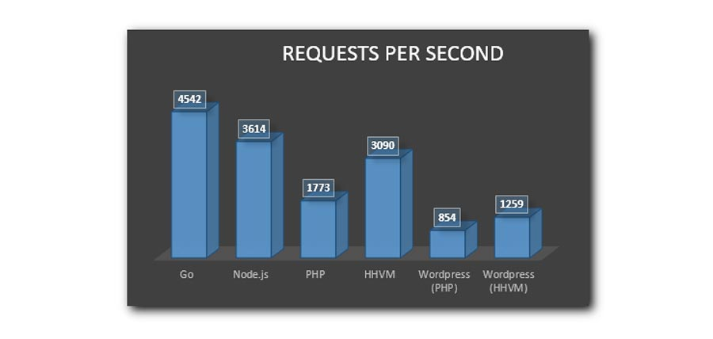

بررسی سرور قسمت ۲¶
آشنایی با زبان برنامه نویسی Go یا Golang¶
چرا گو ?¶
در سپتامبر سال 2007، Ken Thompson و Rob Pike، دو تن از سرشناس ترین چهرهاهای دنیای نرم افزار که نیازی به معرفی شان نیست، ایده ساخت یک زبان برنامه نویسی سیستمی جدید را با Robert Griesemer، یکی دیگر از مهندسین مشغول در Google در میان گذاشتند.
آنها کار بر روی این زبان جدید را شروع کردند و در این مدت تعداد دیگری از همکارانشان همچون Russ Cox و Brad Fitzpatrick و Andrew Gerrand به تیم آنها ملحق شدند.
در نوامبر سال 2009، اولین نسخه آزمایشی زبان با پشتیبانی گوگل به صورت متن باز به عموم برنامه نویسان عرضه شد. از آن زمان تا کنون بیش از 300 نفر از برنامه نویسان داوطلب در توسعه این پروژه شرکت داشته اند.
از اولین ماه انتشار این زبان، شرکتهای Startup زیادی استفاده از آن را شروع کردند. با اینکه زبان در نسخه آزمایشی به سر میبرد، اما برای خیلیها وجود نام Jeb Thompson و Rob Pike کافی بود تا از کیفیت زبان اطمینان حاصل کنند.
شرکتهای بزرگ تر اما، منتظر نسخه پایدار ماندند. تا اینکه در ماه مارس سال 2012، نسخه 1.0 از زبان برنامه نویسی Go به صورت پایدار منتشر شد.
در زیر لیست تعدادی از شرکتهای استفاده کننده از این زبان را میبینید:
- YouTube
- BBC
- Canonical
- Nokia Siemens
- Bitly
- Heroku
- CloudFlare
- SmugMug
- Feedbooks
- Iron.io
- Moovweb
- AirBrake
- Swirl.us
- SoundCloud
تقریباً در تمام اسامی بالا، از Go برای طراحی سیستمهای Back-end استفاده شده است. جایی که زبانهای اسکریپتی قدرت مناسب را ندارند و معمولا از JVM استفاده میشود؛ در خیلی از مواقع هم برای رسیدن به سرعت بالاتر، پای کدهای c و C++ به میان میآید.
فکر نمیکنم در تاریخ زبانهای برنامه نویسی بوده که توانسته باشد فقط با گذشت 7 ماه از انتشار اولین نسخه پایدارش، با چنین مقبولیتی روبرو شود.
مسلم است که Go هنوز در اول راه است، و برای رسیدن به جایگاه زبانهایی مثل C++ و Java و Python و… راه درازی در پیش دارد، اما به نظر میرسد که برای شروع بسیار موفق عمل کرده است.
Go یک زبان مدرن و همه منظوره است¶
Go زبانی است که برای نیازهای امروز برنامه نویسان طراحی شده است. تمامی سعی طراحان بر این بوده که بتوانند تناسبی بین قدرت، سرعت و سادگی ایجاد کنند. ایدههایی که در آن بکار رفته با دقت و وسواس زیادی انتخاب و پیاده سازی شده اند. طبق گفته تیم توسعه، بر سر بعضی از قابلیتهای زبان تا یک سال بحث و تبادل نظر صورت گرفته است.
Rob Pike عنوان میکند که ایده اولیه آنها ساخت یک زبان سیستمی بود که بتواند جایگاه مناسبی برای C++ باشد. در روزهای اول، حتی سایت پروژه هم Go را به عنوان زبانی برای برنامه نویسی سیستم معرفی میکرد. اما با گذشت زمان متوجه شدند که تاکید آنها بر سادگی، باعث شده نظر برنامه نویسان زبانهای سطح بالاتری مثل Python یا Ruby هم به Go جلب شود؛ این قضیه برای تیم توسعه هم جالب بود.
در واقع میتوان گفت که Go با ظرافت فراوان قدرت و سرعت زبانی مثل C را با سهولت و سادگی زبانی مثل Python ترکیب کرده. به همین دلیل قادر است طیف بسیار وسیعی از برنامهها را پوشش دهد، از برنامههای سیستمی گرفته تا برنامههای ساده چند خطی. چه کسی گفته که یک زبان سیستمی، حتماً باید سخت باشد؟
Go یک زبان (آزاد) و متن باز است¶
با اینکه Go مستقیما از طرف گوگل پشتیبانی میشود، ولی یک زبان کاملاً آزاد است و تحت کنترل هیچ شرکتی نیست. Pike اعلام کرده که برای اثبات این موضوع، از قصد هیچ لوگوای از شرکت گوگل را در سایت این زبان قرار نداده اند!
این یعنی:
- سیاست کاری و تجاری هیچ شرکتی بر آینده زبان تاثیر نخواهد گذاشت.
- توسعه و بهسازی زبان با سرعت بیشتری انجام میشود.
- همه میتوانند به طور شفاف تمام مراحل توسعه را دنبال کنند.
- کتابخانهها و فریم ورکهای متن باز بیشتری برای زبان وجود خواهد داشت.
- و….
Go یک زبان کامپایل شونده است¶
برای اجرای برنامههای نوشته شده در Go، باید آنها را Compile نمایید. خروجی عملیات کامپایل، کد ماشین است. بدون نیاز به VM، بدون نیاز به JIT، و بدون نیاز به تفسیر. همانند C، حاصل برنامه شما مستقیما کدهای ماشین خواهد بود.
در حال حاضر کامپایلر Go که خودش در زبان C نوشته شده، قادر است برای پلتفرمهای x86 و x86 و arm کد ماشین تولید کند. سرعت کامپایل شدن برنامهها در Go بسیار بسیار بالاست! و در این زمینه جای هیچ رقابتی را برای دیگر زبانهای کامپایلری مانند C++ و Java و C# و … باقی نگذاشته است.
خود کامپایلر نیز به صورت رسمی برای سیستم عاملهای Linux و Mac و FreeBSD و Windows منتشر میشود. اما به شکل غیر رسمی، کاربران گزارش کرده اند که روی سیستمهای دیگری مثل Android و Plane9 و بقیه BSDها هم موفق به اجرای آن شده اند.
در Go نیاز به چیزهایی شبیه makefileها و یا برنامههای مدیریت پروژه مثل Maven نیست. کامپایلر Go از فایلی که تابع main در آن قرار دارد شروع کرده و خودش بقیه کدهای مورد نیاز را شناسایی و لینک مینماید! حتی اگر یک برنامه چند صد هزار خطی با تعداد زیادی سورس فایل داشته باشید، فقط یک خط دستور ساده در ترمینال کافیست تا کل برنامه شما کامپایل شود.
لازم به ذکر است که کامپایلر Go کدهای شما را به شکل Static لینک مینماید. به این معنی که حاصل کامپایل برنامه شما در نهایت یک فایل اجرای یک تکه خواهد بود؛ مهم نیست که برنامه شما از تعداد زیادی فایل و یا Packageهای جانبی تشکیل شده، چیزی که در نهایت به شما تحویل داده خواهد شد یک فایل اجرایی ساده است که برای اجرا شدن هیچ پیش نیازی لازم ندارد و به راحتی قابل انتقال به دستگاههای دیگر است.
کامپایلر Go با کسی شوخی ندارد! چیزهایی که در زبانهای دیگر باعث Warning میشوند، همگی در Go به عنوان Error در نظر گرفته شده اند. مثلا اگر یک متغیر تعریف کرده باشید اما از آن استفاده نکرده باشید، کامپایلر به جای یک Warning سطحی، با یک پیغام Error کل عملیات کامپایل را متوقف میکند! در Go چنین اشتباهاتی پذیرفتنی نیست!
Go و Syntax آشنا¶
Go زبانی است از خانواده C و به همین دلیل برنامه نویسانی که با C و ++C و Java و #C و PHP و JavaScript و … آشنایی دارند، بسیار راحت Syntax این زبان را یاد خواهند گرفت. برای مثال با کمی دقت در کد زیر، براحتی متوجه منظور آن خواهید شد:
Syntax یک زبان تاثیر زیادی در پیشرفت آن دارد. وقتی Syntax زبان آشنا باشد، برنامه نویسان راحت تر آن را یاد خواهند گرفت و به همین نسبت محبوبیت زبان بالاتر خواهد رفت. با بلا رفتن محبوبیت، سازندگان زبان با اشتیاق و سرعت بیشتری به کار توسعه مشغول میشوند. در این حالت ضریب اعتماد برنامه نویسان به زبان بالاتر میرود و کتابخانهها و ابزارهای بیشتری برای زبان تولید میشود.
برنامه نویسان بیشتر از اینکه کد نویسی کنند، به کد خوانی مشغول اند. تا زمانی که Syntax یک زبان توسط برنامه نویسان پذیرفته نشود نمیتواند محبوبیت چندایی پیدا کند. برای مثال زبانهای Functional با آن همه قابلیتهای منحصر به فردی که دارند، در اکثر اوقات فقط به دلیل داشتن Syntax نا آشنا در رابطه با جذب برنامه نویسان با مشکل مواجه میشوند.
Syntax زبان Go را میتوان ترکیبی از Syntax زبانهای C و Python و Pascal به حساب آورد. سعی شده تا Syntax زبان کوچک، تمیز، و قابل فهم باشد. برای مثال ساختار حلقه در Go فقط با for پیاده سازی شده و حلقههای while یا do از آن حذف شده اند.
نکته جالب دیگری در مورد Syntax زبان Go این است که گرامر آن Regular است! و به همین دلیل پردازش کدهای Go برای ابزارهای جانبی مثل IDEها بسیار آسان خواهد بود. همچنین Coding پیش فرض تمام سورس فایلهای UTF-8 است! (Ken Thompson و Rob Pike خودشان خالق UTF-8 هستند.)
Go یک زبان رویهای است (Procedural)¶
سوالی که برای تعداد زیادی از برنامه نویسان مشتاق پیش میآید این است که آیا Go یک زبان شیءگراست؟ جواب این است که خوشبختانه خیر! حداقل نه به شکلی که در زبانهای شیءگرا با آن آشنا هستید.
باید توجه داشته باشید که شیءگرایی یک مفهوم است نه یک قابلیت. اینطور نیست که در زبانی باشد و در زبان دیگری وجود نداشته باشد. برای مثال در زبانی مثل C که شیءگرا نیست هم میتوان از مفاهیم شیءگرایی استفاده کرد. حتی در یک زبان Functional مانند Lisp هم میتوان از شیءگرایی بهره برد.
البته مسلم است که اگر یک زبان دارای گرامر خاصی برای این منظور باشد پیاده سازی کدهای شیءگرا در آن آسان تر خواهد بود. مانند همان چیزی که در Java ،PHP و … موجود است.
اولین نکتهای که باید درک شود این است که شیءگرا بودن یک زبان، به هیچ عنوان تضمینی بر کیفیت ساخت آن زبان نیست! حتی تضمینی بر کیفیت کدهایی که در آن زبان نوشته میشوند هم نیست!
دومین نکته این است که شیءگرایی، برعکس چیزی که در کتابها درباره اش میخوانید و تبلیغاتی که حول و حوش آن میشود، دارای مخالفان زیادی است!
صحبت در مورد نظرات مثبت و منفی نسبت به شیءگرایی در این نوشته نمیگنجد. شما میتوانید خودتان در این باره تحقیق کنید. اما برای جلب توجه هر چه بیشتر شما به این موضوع، لیست کوچکی از اسامی افرادی را به شما نشان میدهیم که از مخالفان معروف شیءگرایی به حساب میآیند:
Ken Thompson: خالق سیستم عامل Unix، خالق زبان برنامه نویسی B، اولین توسعه دهنده Reqular expressions، خالق کدینگ UTF-8، خالق زبان برنامه نویسی Go و…
Dennis Ritchie: نفر دوم در خلق سیستم عامل Unix، خالق زبان برنامه نویسی C و…
Rob Pike: عضو تیم توسعه سیستم عامل Unix و سیستم عامل Plan9، خالق کدینگ UTF-8، خالق زبان برنامه نویسی Limbo، خالق زبان برنامه نویسی Go و …
Richard Stallman: خالق پروژه GNU، از توسعه دهندگان اولیه مجموعه کامپایلرهای GCC، از توسعه دهندگان اولیه Emacs، GDB، Gmake و…
Gmake، GDB، ،Emacs و …
Linux Torvalds: خالق سیستم عامل Linux، خالق Git و …
Rich Hickey: خالق زبان برنامه نویسی Clojure و …
Joe Armstrong: خالق زبان برنامه نویسی Erlang، از طراحان پلتفرم OTP و…
Simon peyton-Jones: از طراحان زبان برنامه نویسی Haskell، توسعه دهنده اصلی کامپایلر GHC و …
Paul Graham: خالق زبان برنامه نویسی Arc، موسس شرکت Y Combinator شرکتی که مولد سایتهایی مثل Disqus، Dropbox، Reddit و Scribd است.
Edsger Dikstra: از بزرگترین محققان دنیای کامپیوتر و ابدا کننده الگوریتمهای تاثیرگذاری مثل الگوریتم معروف دایکسترا و …
Alexander Stepanov: طراح اولین کتابخانه STL در زبان C++.
Luca Cardelli: نویسنده اولین کامپایلر زبان برنامه نویسی ML. زبان ML ریشه اصلی زبانهای Haskell، Ocaml و F# میباشد، از طراحان زبان برنامه نویسی Modula-3 و …
می توان گفت که اینها سرشناس ترین افراد در دنیای برنامه نویسی هستند؛ اگر هیچکدام از این افراد نظر خیلی مثبتی نسبت به شیءگرایی ندارند، پس شاید بد نباشد که کمی از وقت خود را به تحقیق در این رابطه اختصاص دهید!
ساختار رویهای Go در برابر شیءگرایی طراحیان Go بر این باورند که مدل شیءگرایی در زبانهایی مثل Java و C# و C++ پیچیدگیهای زیادی دارد. و این پیچیدگی در زبان، باعث تولید کدهای پیچیده خواهد شد.
Go یک زبان رویهای است (Procedural)، اما نه یک زبان رویهای کلاسیک مانند C.
طراحان Go نوآوریهای جالبی در ساختار کلاسیک زبانهای رویهای ایجاد کرده اند تا Go را به یک زبان رویهای مدرن تبدیل کنند!
برنامه نویسان با کمک این ساختار رویهای مدرن، نیاز چندانی به آن شیءگرایی مرسوم در زبانهای دیگر حس نخواهند کرد. در ادامه با تعدادی از ایدههای جدید Go در این زمینه آشنا میشوید.
ابتدا یک توضیح ساده در باره کلاسها و اشیا¶
در بیشتر زبانهای برنامه نویسی روشی وجود دارد که برنامه نویس به کمک آن میتواند یک Data Type جدید ایجاد کند. Data Type که به اختصار Type خوانده میشود، الگوی است که تعیین میکند یک داده چه ساختاری در حافظه خواهد داشت و چه عملیاتی میتواند روی آن انجام داد.
زبانهای مختلف، روشهای مختلفی برای ساخت یک Type ارایه کرده اند. مثلا در زبان C از Struct برای این منظور استفاده میشود. (با همراهی typedef) در اکثر زبانهای شیءگرا هم ساختاری وجود دارد به نام Class که به برنامه نویس امکان ساخت یک Type جدید را میدهد.
در زبانهای شیءگرا، یک Type میتواند از تعدادی فیلد و متد تشکیل شود که به ترتیب تعیین کننده خصوصیات و رفتار آن Type هستند.
برای استفاده از یک Type، باید یک نمونه از آن Type را در حافظه ایجاد کنید. در زبانهای شیءگرا این نمونهها را اصطلاحا Object یا شی مینامند.
Go به جای Class از Struct استفاده میکند¶
Go هم مثل C از Structها برای ساخت یک Type جدید استفاده میکند. با این تفاوت که Structهای Go نسبت به C پیشرفته ترند. یک Struct در Go میتواند علاوه بر داشتن فیلد، دارای متد هم باشد.
متدها در Go همان توابع معمولی هستند. حتی داخل structها هم نوشته نمیشوند. فقط لازم است با یک تغییر کوچک به هنگام تعریفشان، آنها را به structها نسبت دهیم.
در واقع با وجود داشتن چنین Structهایی در زبان Go، شما نیازی به داشتن چیزی مثل Class ندارید! همان کارهایی که با Classها قابل انجام است، با این Structهای جدید خیلی راحت تر و سبک تر قابل انجام خواهد بود.
زبان برنامه نیسی Rust هم که در حال توسعه از طرف Mozilla است، با اینکه در نسخههای اولیه خود دارای ساختار Class بود، اما در نسخه 0.4، ساختار Class را از زبان حذف کرد و آن را با Structهایی مشابه چیزی که در Go وجود دارد جایگزین نمود.
Go از Composition به جای وراثت استفاده میکند¶
Java سعی کرد با حذف قابلیت وراثت چندگانه که در C++ وجود داشت، باعث ساده شدن مکانیزم وراثت در زبان شود. Go یک قدم جلوتر رفت و کلا با حذف وراثت، Compositon را به جای آن جایگزین کرد.
Composition چیست؟ فرض کنید دو Struct به نامهای A و B تعریف کرده ایم. B میتواند A را مانند یک فیلد معمولی در Struct خود قرار دهد تا به اعضای موجود در A دسترسی داشته باشد.
همانند شیو Structهای تو در تو در زبان C. به این ترتیب بدون درگیر شدن با پیچیدگیهای مبحث وراثت، میتوانیم کانیزمی شبیه آن را در کدهایمان داشته باشیم.
حتما میدانیم که خیلی از زبانهای شیءگرا از یک سیستم سلسله مرتبهای برای کار با اشیا بهره میبرند. مثلا در بیشتر آن ها، یک شی Object وجود دارد و بقیه اشیاء همگی به طریقی از آن ارث میبرند.
در Go چنین چیزی وجود ندارد. هر Type برای خودش مستقل است. نیازی نیست کامپایلر در هر عمل کامپایل رابطه وراثت بین Typeها را چک کند. یکی از دلایل اصلی سرعت کامپایلر Go نیز همین مساله است.
اطمینان داشته باشید که خودتان هم با استفاده از قابلیت ترکیب سازی در Go، متوجه مزیت آن نسبت به وراثت خواهید شد.
حتی در کتاب Design Patterns: Elements of Reusable Object-Oriented Software که یکی از معروف ترین کتب مرجع در زمینه شیءگرایی میباشد، عنوان شده است که:
Note
ترکیب سازی اشیاء را به وراثت ترجیح دهید
Favor Object Composition over class inheritance
Go میتواند برای اعضا حق دسترسی تعیین کند اگر نام یک عضو با حرف کوچک شروع شود (مانند hello)، آن عضو فقط برای اعضای داخل Package در دسترس است.
اگر نام یک عضو با حرف بزرگ شروع شود (مانند Hello)، آن عضو میتواند در محیط خارج از Package نیز در دسترس قرار گیرد.
در این حالت فقط با یک نگاه به نام آن عضو، میتوان به سطح دسترسی آن پی برد.
دقت کنید که این روش فقط یک “استایل نام گذاری” نیست. این یک “قانون” است، به این معنی که کامپایلر واقعا در زبان کامپایل این سطوح دسترسی را چک میکند.
Go دارای ساختار interface است interface به عنوان یکی از بهترین قابلیتهای معرفی شده توسط زبانهای شیءگرا در Go حضور دارند. برنامه نویسان Java و C# با interfaceها کاملا آشنایی دارند.
به زبان ساده، یک interface مشابه یک (سند قرارداد) است. تمام Typeهایی که به یک interface وابسته هستند موظف اند از قراردادهایی که توسط آن interface تعریف شده تبعیت کنند. بدین صورت آن interface میتواند در موقعیتهای مختلف، به وکالت از تمام Typeهای وابسته به آن مورد استفاده قرار بگیرد (به جای این که تک تک آن Typeها را جداگانه احضار کنید).
در Go، قرارداد بین یک interface و Typeهای وابسته به آن، فقط شامل تعاریف متدها میشود.
Interfaceها نگرش اصلی زبان Go به مبحث Polymorphism میباشند؛ آنها به عنوان یکی از قابلیتهای مهم زبان تلقی شده و به هنگام ساخت APIها بسیار مورد استفاده قرار میگیرند. مطالعه و یادگیری آنها برای افراد علاقه مند به زبان Go توصیه میشود.
درست است که Go چیزی تحت عنوان Class ندارد، اما اجباری نیست که برای نوشتن کدهای شیءگرا حتما از Classها استفاده کنید. اجباری هم نیست که حتما برنامههای خود را به صورت شیءگرا طراحی کنید. این توهمای است که امثال زبانهایی مثل Java و C# و C++ به شما تلقین کرده اند.
Go تمام قابلیتهای لازم برای برنامه نویسی شیءگرا را در اختیار شما قرار داده است. حتی میتوان گفت که شیءگرایی در Go به نسبت خیلی از زبانهای دیگر ساده تر و راحت تر است.
مساله این است که دیدگاه Go نسبت به ساخت برنامه ها، با دیدگاهی که زبانهایی مثل Java یا C# با آن آشنا هستید متفاوت است. هدف آنها یکی است، اما روش کارشان با یکدیگر فرق دارد.
برنامه نویسی در Go بر مبنای Typeها و توابع صورت میگیرد، نه Classها و متدها.
سازندگان Go فکر نمیکنند که برای نوشتن برنامههای ساخت یافته در ابعاد وسیع، حتما باید به شیءگرایی متوسل شد؛ شاید راههای ساده تر و مناسب تری هم وجود داشته باشد. این دیدگاه شبیه همان نگرشی است که زبانهای Functional به عنوان قطب مخالف زبانهای شیءگرا مدت هاست که آن را عنوان میکنند.
Go یک زبان Static-Type است¶
- زبانهای Static نسبت به زبانهای Dynamic از سه مزیت عمده برخوردارند:
- سرعت: چون در زبانهای Static نوع تمام دادهها از قبل مشخص میشود، سرعت اجرای برنامه به مراتب بالاتر از زبانهای Dynamic خواهد بود. در زبانهای Dynamic نوع دادهها به هنگام اجرا مشخص خواهد شد.
- امنیت: در زبانهای Static کامپایلر قادر است تمام دادهها و پارامترها را چک کند تا اگر برنامه نویس به صورت سهوی متغیری را در جای اشتباهی به کار برده بود، قبل از کامپایل برنامه به او هشدار داده شود.
مستندات: مستندسازی کدها در زبانهای Dynamic نیاز به دقت بالایی دارد. برای مثال باید نوع پارامترهای یک تابع را در مستندات ذکر کنیم تا برنامه نویسان دیگر بدانند که قرار است چه نوع دادهای را به تابع ارسال کنند. اما در زبانهای Static نوع هر پارامتر جزیی از خود کد است و برنامه نویس با یک نگاه ساده به نحوه تعریف تابع میتواند اطلاعات زیادی درباره آن بدست آورد.
جدای از مزایایی که زبانهای Static ارائه میکنند، یک عیب بزرگ نیز دارند: اینکه Static هستند. درست است، Static بود نیک زبان شبیه چاقوی دولبه است. مزیت اصلی آن، همان عیب آن است.
در این زبانها باید مدام با Typeها سرو کله بزنید. برنامه نویسان زبانهای Dynamic به خوبی میدانند که Dynamic بودن زبان دلخواهشان، تا چه میزانی در سرعت کدنویسی شان تاثیر دارد.
خوشبختانه Go میتواند Type یک متغیر را از روی مقداری که به آن نسبت میدهیم تشخیص دهد. مثلا اگر عدد 12 را در متغیر A بریزیم، Go متغیر A را از نوع int فرض خواهد کرد. این قابلیت شبیه سیستم Type Inference در زبان Haskell است.
وقتی چنین سیستم تشخیص Typeای را با مدل ساده و سریع کامپایل برنامهها ادغام کنید، متوجه میشوید که سرعت کدنویسی شما قابل رقابت با سرعت کدنویسی در زبانهای Dynamic خواهد بود.
جناب آقای Joe Armstrong خالق زبان برنامه نویسی Erlang و پلتفرم OTP در مورد زبان برنامه نویسی Go میگوید:
من فکر میکنم این زبان به سنت Unix و C برگشته و کمبودهای زبان C را جبران کرده است. من فکر نمیکنم که C++ یک پیشرفت در این زمینه بوده باشد. اما معتقدم که Go قطعا یک پیشرفت برای زبان C به حساب میآید. و از طرفی هم این افراد در گذشته با آدمهایی مثل Kernighan و امثال اون کار میکردن و اطمینان دارم که تجربه بسیار بالایی در ساخت زبانها برنامه نویسی دارن. این زبان خیلی ظریفانه مهندسی شده و از اول خیلی از ابزارهایی که احتیاج دارید در اون وجود داره. حتی اولین نسخهای هم که از این زبان منتشر شد در سطحی از تکامل قرار داشت که انگار سالها در حال توسعه بوده و در کل نظر من در مورد این زبان بسیار مثبت است.
Go و Concurrency:¶
قبل از هر چیز، نیاز داریم این مفاهیم را تعریف کنیم. متاسفانه خیلی از سایتها و منابع، تعریف درست و قابل فهمی از Concurrency و Parallelism ارایه نکرده اند و درک این مفاهیم را برای خیلی از برنامه نوسان مشکل ساخت اند.
در ادامه با تعریف Rob Pike از این مفاهیم آشنا میشویم:
Concurrency: برنامه نویسی بر مبنای مجموعه از واحدهای اجرایی مستقل، که هدف مشترکی دارند.
Parallelism: توانایی اجرای چندین پردازش به صورت موازی، با هدف دستیابی به سرعتی بالتر.
Concurrency مدلی برای ساخت یک برنامه است، اما Parallelism مدلی برای اجرای برنامه هاست.
Concurrency در فاز ساخت برنامه اعمال میشود، اما Parallelism در زمان اجرای برنامه اتفاق میافتد.
در Concurrency واحدهای اجرای مستقل از یکدیگرند، ولی هدف مشترکی دارند.
در Parallelism پردازشها ممکن است هیچ ربطی به هم نداشته باشند. (مثل پردازش دو برنامه جداگانه)
Concurrency اجرای Parallel واحدهای اجرایی را تضمین نمیکند! ممکن است برنامه شما Concurrent باشد اما اجزایش به صورت Parallel اجرا نشود (مثل Concurrency در Python). مهم این است که ساختار برنامه به صورت Concurrent نوشته شده باشد.
Concurrency ساختاری را برای برنامه محیا میکند که در صورت وجود بستر سخت افزاری و نرم افزاری مناسب، اجزای مختلف برنامه بتوانند به شکل Parallel پردازش شوند.
به عبارت دیگر، اگر برنامهای به صورت Concurrent ساخته نشود، به صورت Parallel اجرا نخواد شد! (البته Load کردن چندین نمونه از یک برنامه در حافظه برای انجام پردازش Parallel مبحث جداگانه ایست که ربطی به بحث فعلی ندارد.)
هر برنامه نویس هم ممکن است به شیوه متفاوتی Concurrency را در ساختار برنامه اش اعمال کند. قانون ثابتی برای طراحی برنامههای Concurrent وجود ندارد.
لازم به ذکر است که برای دستیابی به پردازش Parallel، حتما باید بیش از یک هسته CPU در دسترس باشد تا پردزش Parallel به شکل واقعی اتفاق بیفتد.
در سالهای اخیر با گسترش استفاده از پردازندههای چند هسته ای، سیستمهای توزیع شده، و نیاز وب سرویسها برای پاسخ گو بودن به تعداد بالایی از درخاست ها، وجود بستری مناسب برای برنامه نویسی همروند و یا Concurrent کاملا قابل احساس است.
در این بین، زبانهای تابع گرا و یا Functional که به طور ذاتی برنامه نویسی Concurrent را به شما تلقین میکنند در این زمینه پیش افتاده اند و هر روز بر محبویت شان افزوده میشود. زبانهایی مثل Erlang و Haskell و Clojure و …
زبانهای دستوری و یا Imperative هم هر کدام در این راستا تلاشهایی کرده اند، اما اکثر آنها هنوز هم به طور مستقیم از Thread و Processها استفاده میکنند.
درست است که مبنای کار همه پردازشها در نهایت بر پایه Threadها و Processها خواهد بود، اما اینها جزو مفاهیم سطح پایین یک سیستم عامل محسوب میشوند و استفاده مستقیم از آنها برای پیاده سازی Concurrency بسیار بسیار دشوار است و در عمل بهینگی لازم را ندارد.
به نظر میرسد استفاده از تکنیک عملیات نا همگام و یا Asynchronous تا حدودی به روند ساخت برنامههای Concurrent در این زبانها کمک کرده و بهینگی لازم را برای آنان فراهم نبوده است.
کتابخانههایی مثل gevent در Python یا محیطهای همچون node.js برای JavaScript از نمونههای موفق در بکارگیری تکنیک عملیات Asynchronous میباشند. با اینکه چنین فریم ورکهایی از استقبال خوبی برخوردار شده اند، اما راه حلی برای برنامه نویسی Concurrent به حساب نمیآیند.
حقیقت این است که عملیات Asynchronous برای گونه خاصی از برنامهها که رخدادهای I/O در مقیاس بالا در آنها اتفاق میافتند بسیار خوب عمل میکنند (مثل وب سرورها) اما وقتی صحبت از پردازشای سنگین میشود، مدل Asynchronous راه حل مناسبی ارایه نمیکند.
در مدل Asynchronous اگر قسمتی از برنامه نیاز به پردازش طولانی مدت داشته باشد، بقیه اجرا باید منتظر بمانند تا کار آن قسمت تمام شود؛ چرا که تمام اجزای برنامه فقط در یک Thread پردازش میشود. از همین رو پردازشها باید بسیار کوچک و گذرا تعریف شوند.
با توضیحات بالا به نظر میرسد یک پیاده سازی مناسب از قابلیت Concurrency باید دارای خصوصیات زیر باشد:
- پیاده سازی Concurrency باید ساده و آسان باشد.
- پیاده سازی Concurrency باید بهینه و سبک باشد.
- پیاده سازی Concurrency باید تا جایی که ممکن است همه منظوره باشد.
خوشبختانه یکی از دلایل اصلی ساخت زبان Go پشتیبانی قدرتمند از برنامه نویسی Concurrent بوده است. این زبان نه به صورت یک کتابخانه و نه به صورت یک قابلیت جانبی، بلکه به صورت درونی از Concurrency پشتیبانی میکند. حتی دارای یک سینتکس مخصوص برای این کار است.
Go چنین بستری را مدیون تجربه سی ساله Rob Pike در زمینه طراحی سیستم عاملها و زبانهای Concurrent است. هر چه باشد، کار این افراد در گذشته و حال ساخت و طراحی سیستم عامل بوده است.
از آنجایی که برنامه نویسی Concurrent در Go اهمیت زیادی دارد، طراحان زبان یک قابلیت منحصر به فرد را برای این منظور در زبان جاسازی کرده اند و آن Goroutines است.
اگر یادتان باشد گفتیم که Concurrency یعنی برنامه نویسی بر مبنای مجموعهای از واحدهای اجرایی مستقل، اما نگفتیم منظورمان از واحد اجرایی مستقل چیست. در واقع، هر زبانی دیدگاه خاص خودش را به این مفهموم دارد.
در زبان Go ساختاری به اسم Goroutine بیانگر این واحد اجرایی مستقل است.
یک Goroutine در واقع همانند یک Coroutine است و تشابه اسمی آنها بی دلیل نیست. اما قبل از هر چیز توضیح کوتاهی داشته باشیم برای افرادی که با Coroutineها آشنایی ندارند.
در زبانهای برنامه نویسی وقتی یک تابع اجرای میشود، اجرای آن تابع تا زمای که کارش به طور کالم به پایان نرسیده و یا مقداری از آن برگشت داده نشده ادامه خواهد داشت. Coroutine تابعی است که میتواند اجرایش را در میانه راه متوقف کند و به حالت Standby برود.
بعدها اگر دوباره به این تابع بازگشتیم، اجرای تابع از جایی که قبلا متوقف شده بود ادامه پیدا میکند. این قابلیت برنامه نویس را قادر میسازد تا Coroutineها را زمانبندی نماید و یا بین آنها سوییچ کند.
رمز کار در این است که علاوه بر داشتن یک Stack سراسری برای نگه داری وضعیت کلی برنامه، برای هر Coroutine نیز یک Stack جداگانه ساخته میشود تا Coroutine بتواند وضعیت فعلی خود را به هنگام سوییچ شدن در آن ذخیره کند.
یک Coroutine بسیار شبیه یک Thread است. وقتی سیستم عامل از یک Thread به Thread دیگری سوییچ میکند، Thread قبلی را به حالت Standby فرو میبرد تا وقتی دوباره به آن برگشت آن Thread قادر به ادامه اجرایش باشد. برای همین است که گاهی Coroutineها را با نام Green Thread هم صدا میزنند چرا که رفتار آنها بسیار شبیه Threadها است.
Coroutineها در زبانهایی مثل Erlang ،Haskell، Scheme، Perl، Lua، Ruby، Python و خیلی زبانهای دیگر وجود دارند، هرچند که ممکن است با اسم متفاوتی ظاهر شوند.
برای مثال در Python با نام Greenlet، در Ruby با نام Fiber، و یا در Erlang با نام Lightweight Process شناخته میشوند. البته هر کدام از این زبانها سلیقه خاص خودشان را در پیاده سازی Coroutineها اعمال کرده اند.
Coroutineها چندین فرق اساسی با Threadها دارند:¶
- عمل زمانبندی و سوییچ کردن بین Threadها به صورت اتوماتیک و توسط سیستم عامل انجام میشود. اما در Coroutineها خود برنامه نویس باید به صورت دستی زمانبندی و کنترل اجرای Coroutineها را مدیریت کند.
- از آن جایی که Coroutineها در واقع نوعی از توابع هستند، قالبا در داخل یک Thread اجرا میشوند و به همین خاطر قادر نیستند از چندین هسته پردازنده استفاده کنند. اما Threadها میتوانند براحتی روی هستههای مختلف پخش شوند.
- Coroutineها در لایه کاری خود زبان برنامه نویسی مثل سیستم Runtime یا VM آن زبان اجرا و مدیریت میشوند. اما Threadها در لایه کاری سیستم عامل اجرا و مدیریت میشود.
- چون Coroutineها نوعی از توابع معمولی هستند و در لایه کاری زبان برنامه نویسی اجرا میشوند، پس اجرای آنها در حافظه و یا سوییچ کردن بین آنها دهها و شاید هم صدها برابر سریعتر و بهینه تر از Thread هاست.
یک Groutine در واقع پیاده سازی منحصر به فرد زبان Go از Coroutine هاست که به عنوان واحد اصلی Concurrency در این زبان جاسازی شده است. در ادامه با خصوصیات Goroutineها آشنا میشوید:
- اجرای Goroutineها در لایه سیستم عامل صورت نمیگیرد و در لایه خود زبان (سیستم Runtime) مدیریت میشود. (البته وظیفه اجرای Grotoutineها رد لایه سیستم عامل به عهده Thread هاست.)
- زمانبندی Goroutineها به طور اتوماتیک توسط سیستم Runtime زبان انجام میشود و این مسئولیت از دوش برنامه نویس برداشته شده است.
- سیستم Runtime میتواند Goroutineها را روی چندین Thread پخش کند و چون Threadها نیز میتوانند روی هستههای مختلف CPU پخش شوند، پس اجرای واقعی Parallel اتفاق میافتد.
- سیستم Runtime در Go فقط مسئول کنترل Goroutineها در یک ماشین است. یعنی یک ماشین با چند CUP، یا یک CPU چند هسته ای. پردازشهای Distributed باید توسط خود برنامه نویس طراحی شود.
- Goroutineها بسیار سبک و بهینه هستند. در کامپیوتری که ممکن است با ایجاد 1.000 عدد Thread کرش کند، میتوان 1.000.000 عدد از Goroutine را اجرا کرد! سایز پیش فرض Stack برای هر Goroutine فقط 4kB است.
- Goroutineها بلاک نمیشوند. اگر در یک Goroutine عملیات بلاک شونده I/O صورت بگیرد، بقیه Goroutineها در Thread دیگری به اجرای خودشان ادامه میدهند.
- در جایی هم که ممکن باشد، سیستم Runtime خود به خود از عملیات Asynchronous برای رخدادهای I/O استاده میکند. شما نیاز نیست با مدل برنامه نویسی Asynchronous درگیر شوید.
- Goroutineها بر مبنای سیستم انتقال پیام (Message Passing) کار میکنند و به این شیوه قادرند با یکدیگر در ارتباط باشند. در Go پیامها توسط Channelها که در واقع همان کانالهای ارتباطی بین Goroutineها هستند رد و بدل میشوند.
- به صورت پیش فرض، عمل انتقال پیام در Go به شکل Synchronous اتفاق میافتد. یعنی پیام فقط زمانی فرستاده میشود. که فرستنده و گیرنده هر دو آماده باشند. این قضیه باعث ساده تر شدن برنامه نویسی میشود. البته در صورت لزوم میتوانید عمل انتقال پیام را به شکل Asynchronous نیز انجام دهید.
- Channelهای Go مانند خود زبان Static Type هستند. اگر یک channel تعیین کند که قرار است فقط دادههای int را ردو بدل کند، داده دیگری از آن نخواهد گذشت.
احتمالا متوجه شباهت Goroutineهای Go و Lightweightهای Erlang شده اید. البته این دو جدای از شباهت ظاهری، تفاوتهای پایهای بسیاری با یکدیگر دارند. Goroutineها بر مبنای مدل CSP پیاده سازی شده اند در حالی که Lightweight Processها بر مبنای مدل Actor توسعه پیدا کرده اند.
مهم ترین تفاوت مدل CSP و مدل Actor به شرح زیر است:
- در مدل CSP واحدهای اجرایی بی نام هستند در حالی در مدل Actor دارای شناسه میباشند.
- ارسال پیام در مدل CSP به شکل Synchronous انجام میگیرد در حالی که در مدل Actor به شکل Asynchronous اتفاق میافتد.
- ارسال پیام در مدل CSP به کمک Channelها انجام میگیرد ولی در مدل Actor مستقیم و بدون واسطه است.
هر کدام از این مدلها مزایا و معایب خودشان را دارند. همچنین باید دقت داشت که Go مانند Erlang یک زبان Functional نیست و از ساختار Immutable استفاده نمیکند، پس لازم است برنامه نویس کمی بیشتر در ساخت برنامههای Concurrent محتاط باشد.
Rob Pike در یک ویدیو آموزشی در YouTube به نام Go Concurrency Patterns مثالی جالب از توانایی Goroutineها را به همگان نشان داد. او کدی نوشته بود که صدهزار Goroutine را در حافظه ایجاد میکرد. سپس یک عدد int بین این Goroutineها دست به دست میچرخید و هر Goroutine هم یک واحد به آن اضافه میکرد.
دقت کنید که برنامه کامپایل نشده بود. بنابراین وقتی Pike دکمه Run را فشار میداد، برنامه باید کامپایل میشد، لینک میشد، در حافظه اجرا میشد، و جواب اجرا برگشت داده میشد… کل این پروسه فقط یک ثانیه به طول انجامید.
احتمالاً اجرای یک برنامه Hello World در Java یا C# که از قبل هم کامپایل شده باشد، ممکن است بیشتر از یک ثانیه به طول انجامد! این حرف جنبه شوخی داشت و از نظر علمی چیزی را ثابت نمیکند.
Go و قابلیتهای Functional¶
در سالها اخیر زبانهای Functional از سایه بیرون آمده اند و محبویت خوبی برای خود دست و پا کرده اند. مخصوصا بعد از معرفی مدل MapReduce از طرف گوگل که با الهام گیری از زبانهای Functional شکل گرفته بود، و همچنین رایج شدن CPUهای چند هستهای و نیاز به بستر مناسب برای Concurrency و پیشرو بودن زبانهای Functional در این زمینه، توجه همه به آنها معطوف شده است.
توابع map() و reduce() از توابع اساسی زبانهای Functional میباشند و تقریبا در تمام زبانهای Functional حضور دارند.
حتی زبانهای غیر Functional مثل Python و Ruby و JavaScript و … هم با اینکه جزو زبانهای Functional به حساب نمیآیند اما دلشان نیامده تا بعضی از ویژگیهای زبانهای Functional را ارایه نکنند.
Go یک زبان سیستمی است؛ یعنی هر چقدر هم که ساده باشد، باید همانند C جنبههای سطح پایین خود را حفظ کند. نباید انتظار داشت که چنین زبانی گرایش Functional داشته باشد. اما طراحان Go ترجیح داده اند که کمی هم چاشنی Functional به زبان اضافه کنند.
در Go، توابع جزو اعضای درجه اول زبان به حساب میآیند (First-Class) یعنی میتوان:
- یک تابع را همانند مقادیر معمولی به عنوان آرگومان به توابع دیگر ارسال کرد.
- یک تابع را به عنوان جواب خروجی از تابع دیگر برگشت داد.
- یک تابع را به یک متغیر نسبت داد؛ به همان صورتی که یک عدد را به یک متغیر int نسبت میدهیم.
Go همچنین داری قابلیت استفاده از توابع به نام (Anonymous Functions) است. توابع Anonymous توابعی هستند که میتوانند به صورت لحظهای تولید شوند و مورد استفاده قرار بگیرند؛ یعنی نیازی نیست که مانند توابع معمولی از قبل آنها را در جایی از کدهایتان تعریف کرده باشید. این توابع خصوصا هنگام کار با Goroutineها بسیار مفید واقع میشوند.
وقتی زبانی دارای توابع First-Class باشد، و امکان تعریف توابع Anonymous را هم داشته باشد، یعنی Closureها نیز در آن زبان حضور دارند. کار Closureها بر بنای توابع تو در تو استوار است. ممکن است برنامه نویسان که کمتر با زبانهای Functional آشنایی دارند با Closureها آشنا نباشند. پس بهتر است کمی در باره Closureها توضیح دهیم.
توضیح درباره Closure ها:¶
به حالت معمول فیلدهایی که داخل یک تابع تعریف میشوند پس از اتمام اجرای آن تابع از بین میروند. در زبانهایی که توابع در آنها First-Class هستند، خروجی یک تابع میتواند یک تابع دیگر باشد؛ به همان صورتی که ممکن است یک عدد int به عنوان خروی در نظر گرفته شود.
فرض کنیم تابعی داریم به نام Outer که یک زیر تابع به اسم Inner را به عنوان خروجی برگشت میدهد. مسلما وقتی که تابع Outer تابع Inner را برگشت میدهد، اجرای تابع Outer تمام شده قلمداد میگردد. در چنین حالتی باید تمام فیلدها و اطلاعات تابع Outer از بین برود.
اما اگر تابع Inner که به عنوان خروجی برگشت داده شده، از فیلدهای تابع Outer استفاده کرده باشد، آن فیلدها تا زمان زنده بودن تابع Inner از بین نخواهند رفت! بنابراین تابع Inner میتواند حتی بعد از اتمام کار تابع Outer هم از فیلدهای آن استفاده کند. تابعی مانند Inner که میتواند برای استفاده داخلی خودش، دادههایی از خارج را به خود وابسته سازد، Closure نامیده میشود.
درک بهتر Closureها به کمی زمان و تمرین نیاز دارد؛ اما بدانید که اگر با کتابخانه Query کار میکنید، احتمالا دهها بار بدن اینکه خودتان متوجه شوید از Closureها استفاده کرده اید.
قابلیتهای نداشته، قابلیت اصلی زبان Go¶
در اجتماع برنامه نویسان Go ضرب المثل جالبی وجود دارد:
Note
مهم ترین قابلیت Go این است که خیلی از قابلیتها را ندارد!
طراحان Go تعداد زیادی از قابلیتهای موجود در زبانهای دیگر را در این زبان قرار نداده اند. موضوع آنها در این باره بسیار رادیکال است و با کسی تعارف ندارند! آنها فلسفه C را در پیش گرفته اند و به شدت تاکید دارند تا زمانی که یک قابلیت واقعا مورد نیاز نباشد، چیزی را به Go اضافه نخواهند کرد.
این یعنی انتظار نداشته باشید که مانند زبانهای دیگر، در هر نسخه جدیدی که از Go منتشر میشود با انبوهی از قابلیتهای جدید مواجه شوید. این افراد از دنیای Unix و C آمده اند، آیا انتظار دیگری از آنها داشتید؟
طراحان Go معتقدند که تمرکز برنامه نویسان باید به خود زبان باشد نه قابلیتهایی که هر از چند ماه به آن اضافه میشود! لازم به ذکر است که از نظر زیر ساختی هر روز بهینه سازیهای زیادی در Go صورت میگیرد. یادتان باشد که Go یک زبان Native است. حتی کامپایلرهای زبان C بعد از گذشت 40 سال هنز در حال توسعه هستند.
لیستی از قابلیتهایی که در Go وجود ندارند:
دقت کنید که سازندگان Go از قصد این قابلیتها را به زبان اضافه نکرده اند و دلایل مناسبی هم برای کارشان دارند. اصولا یا به جای آنها روشهای ساده تر و بهتری را ارائه کرده اند یا اینکه شویه برنامه نویسی در Go به طریقی است که به این قابلیتها نیاز ندارد:
- کلاس ها
- وراثت
- سازندهها و مخربها (Constructors & Destructors)
- محاسبات شاره گرها (Pointer Arthmetic)
- ارجاع this
- تمپلتها (Templates)
- استثناها (Exceptions)
- سربار گذاری متدها (Method Overloading)
- سربار گذاری عملگر (Operator Overloading)
- و چندین قابلیت ریز و درشت دیگر …
نواقص زبان برنامه نویسی Go¶
تا الان فقط در مورد خوبیهای Go صحبت کردیم؛ اما آیا واقعا ممکن است که یک زبان هیچ نقطه ضعفی نداشته باشد؟ مسلما خیر…
نقطه ضعفهای Go از دو زاویه قابل بررسی است. در زاویه اول نقطه ضعفهایی هستند که سازندگان زبان کاملا به آنها آگاهی داشته و قبول دارند که باید بیشتر روی آنها کار شود. در زاویه دوم نقطه ضعفهایی هستند که در جامعه کاربران Go به عنوان نقاط قوت به آن نگریسته میشود! اما برنامه نویسانی که قصد مهاجرت از زبانهای دیگر را دارند، ممکن است با آنها مشکل پیدا کنند.
نقص اول تفاوت سرعت Go با زبان C است! Go به علت داشتن سیستم Runtime و سیستم Garbage Collector، حداقل به صورت تئوری هیچ وقت توانایی برابری با C را نخواهد داشت. اینکه چرا C تا این اندازه سریع است، خود نیاز به بحث جداگانهای دارد.
در حال حاضر کامپایلر Go فقط قادر است کدهای مناسب تولید کند، نه کدهای سریع! به این معنی که کامپایلر Go در نسخه فعلی بهینه سازی خاصی را روی کدهای نهایی انجام نمیدهد. البته توجه کنید که تولید کد ماشین روی چندین پلتفرم مختلف برای یک زبان Native مانند Go اصلا کار راحتی نیست. در این زمینه باید کمی صبر کرد و فرصت بیشتری به توسعه دهندههای زبان داد.
فراموش نکنید که Go در حال حاضر هم یک زبان سریع محسوب میشود. اگر بخواهید Go را با زبانهایی مانند Python یا Ruby یا PHP و یا امثال آنها مقایسه کنید، تجربه ثابت کرده است که Go بین 20 تا 50 برابر سریع تر عمل میکند.
البته موارد زیادی وجود دارد که دیده شده Go به نسبت این زبانها کندتر عمل کند. در چنین حالتی، مطمئن باشید که آن عملیات در پشت صحنه توسط کدهای C اجرا شده است. در چنین زبانهایی برای حل مشکل سرعت، بسیار از ماژولها را در C توسعه میدهند.
اگر بخواهیم Go را با زبانهایی مثل Java یا C# مقایسه کنیم، نمیتوانیم با قطعیت نظری را مطرح نماییم. Microsoft و Oracle (همان SUN سابق) میزان زیادی از وقت و میلیونها دلار از سرمایه خود را برای توسعه ماشین مجازی این دو زبان صرف کرده اند.
حتی Java که همیشه به شوخی به عنوان یک زبان کند معرفی میشود، در واقع یکی ازسریع ترین پلتفرمهای موجود در دنیای برنامه نویسی است. در خیلی از موارد Go سریعتر از این دو پلتفرم بوده، و در خیلی از موارد هم کندتر از آن ها. واقعا نمیتوان به صورت مطلق درباره سرعت آنها ابراز نظر کرد. اما با جرات میتوان گفت که از میزان نظر میزان مصرفی حافظه، Go ثابت کرده که ممکن است حتی تا 10 برابر بهینه تر از این پلتفرمها عمل کند.
مطلب مهم این است که Go به شدت در حال توسعه است و تقریبا هر روز بهینه سازیهای زیادی در آن اعمال میشود. حالا که Go به وضعیت ثبات رسیده است، تازه تیم توسعه کار خود را در زمینه بهینه سازی زبان شروع کرده. برای مثال تنها در یکی از بروز رسانیها کدهای مربوط به Concurrentها تا 50 درصد عمل کرد بهتری داشته اند.
از طرفی، سرعت یک معیار مطلق نیست. خیلی از مسایل ممکن است بر سرعت برنامه تاثیر گذار باشد، که یکی از مهم ترین آنها خود برنامه نویس و روشها و الگوریتمهایی است که انتخاب میکند. شما هم به هنگام انتخاب Go به عنوان زبان آینده خود، زیاد ذهن خود را با عنصر سرعت درگیر نکنید. Go زبانی است با سرعتی بسیار مناسب که روز به روز نیز در حال پیشرفت در این زمینه است؛ فقط باید کمی صبر داشت و به تیم Go فرصت داد تا کارشان را انجام دهند.
نقص دیگر، سیستم Garbage Collector است. Go در ابتدا برای معماری x64 طراحی شده بود (64 بیت). دلیل آن هم این بود که چون پلتفرمهای 32 بیتی کم کم در حال جایگزین شدن با پلتفرمهای 64 بیتی هستند، تیم توسعه تمام توجه خود را به پلتفرمهای 64 بیتی معطوف کرده بود.
متاسفانه در حاصر سیستم Garbage Collector روی معماری 32 بیت (x86) با یک نقص فنی روبرو است که در موارد معدودی میتواند باعث کرش کردن برنامه شود. البته این مشکل فقط برای معماری x86 است و اگر برنامهها را روی معماری x64 اجرا کنید با مشکلی مواجه نخواهید شد. از همین رو توصیه شده است تا زمان برطرف کردن این مشکل، برنامههای خود را فقط روی سیستمهای 64 بیتی اجرا کنید.
نکته بعدی این است که در حال حاضر سیستم Runtime روی پلتفرمهای 64 بیتی، فقط توانایی استفاده از 16 گیگاایت حافظه دارد (به طور متوالی). خیلی نادر اند برنامههایی که به صورت پیوسته به 16 گیگابایت حافظه نیاز داشته باشند، اما در صورت نیاز، باید برنامه خود را به قسمتهای کوچکتری تقسیم کنید تا این محدودیت را دور بزنید.
در مخزن توسعه Go، اصلاحیههایی بای رفع مشکل GC در سیستمهای 32 بیتی وجود دارد، و میزان کسترش حافظه برای سیستم Runtime نیز به 128 گیگابایت افزایش داده شده است. به احتمال بسیار زیاد این اصلاحیهها در نسخه 1.1 زبان قرار خواهند گرفت.
مشکل دیگری که در مورد این زبان وجود دارد نام این زبان است. اگر نام Go را در اینترنت جستجو کنید شاید به نتیجه دلخواه خود نرسید. به همین دلیل طبق قانونی که بین کاربران وجود دارد این زبان را نام Golang صدا میکنند، و تلفظ آن نیز مانند Erlang است.
نقص بعدی در رابطه با یادگیری Go است. دقت کنید که Go یک زبان سیستمی است. در این حالت با همان وضعیتی روبرو میشوید که در زبان C نیز با آن روبرو خواهید شد. یعنی برنامه نویسی با Go به سطح قابل قبولی از تجربه و تخصص در علوم کامپیوتری نیاز دارد.
در زبانهایی مثل Go یا C، تا زمانی که کاملا با طرز کار CPU، حافظه، I/O و مباحث سطح پایین مربوط به هر کدام آشنا نباشید، نمیتوانید براحتی با زبان ارتباط برقرار کنید. شاید بتوانید به سادگی زبان آن را براحتی یاد بگیرید، اما آگاهی شما از زبان همیشه در حد پایینی قرار خواهد داشت. در حالی که یک برنامه نویس Ruby ممکن است هیچ وقت نیاز نداشته باشد تا از Registerها سر در بیاورد.
خصوصا برای استفاده از قابلیتهای Concurency باید از پیش زمینه مناسبی برخوردار باشید. اینطور نیست که به صرف برنامه نویسی در این زبان، اطمینان پیدا کنید که برنامه شما روی یک CPU شانزده هستهای شانزده برابر سریع تر اجرا خواهد شد! برنامه نویسی Concurrent نیازمند مطاعه زیاد و تجربه کافی است. Go برای شما معجزه نمیکند.
مباحث دیگری هم هستند که به اجتماع کاربران Go مربوط میشوند. تفکراتی در این اجتماع وجود دارد که ممکن است برای برنامه نویسانی که از زبانهای دیگر میآیند کمی عجیب باشد.
برای مثال، تیم توسعه Go و اجتماع کاربری آن همیشه عنوان کرده اند که استفاده از کتابخانههای ساده، از اولیت بسیار بالاتری نسبت به فریم ورکها برخوردار است؛ و این که فریم ورکها یکی از عوامل اصلی در پیچیده شدن پروژه میباشند و هر چه کمتر از آنها استفاده کنید بهتر است! و یا این که Andrew Gerrand یکی از اعضای اصلی تیم توسعه در اکانت تویتر خود اعلام میکند چقدر از این که Go فریم ورکهایی مثل Django یا Rails ندارد خوشحال است و امیدوار است که هیچ وقت هم نداشته باشد!
مسلماٌ برای خیلی از برنامه نویسان زبانهای دیگر که به کار با فریم ورکها عادت کرده اند چنین نظراتی کمی عجیب و غریب است! در Go فلسفه Unix حکم فرما است. جای تعجبی هم ندارد، چون این افراد خودشان خالق Unix هستند!
در فلسفه Unix باید از ابزارهای کوچکی استفاده کرد که هر کدام کار مشخصی انجام میدهند؛ در صورت نیاز میتوان با کنار هم قرار دادن این قسمتهای کوچک، ابزار بزرگتری را ایجاد کرد. فریم ورکها به عنوان سیستمی که ابزارهای یکپارچه و غیر قابل تجزیه را توصیه میکنند، عملا در جبهه مخالف فلسفه Unix قرار دارند.
خیلی از برنامه نویسان تازه وارد متوجه نمیشند که چرا GO کار با Type و توابع را جایگزین Classها و متدها کرده… چرا وراثت را از زبان حذف کرده… چرا این زبان Exception ندارد… چرا از سربار گذاری توابع پشتیبانی نمیکند… و دهها سوال دیگر…
اما تقریبا اکثر آنها بعد از مدتی که با Go کار کرده اند، عنوان کرده اند کهای کاش زبان پیشین آنها مانند Go پیاده سازی شده بود! برنامه نویسان نباید در Go به شیوه Java کدنویسی کنند…. نباید به شیوه Python کدنویسی کنند… و یا هر زبان دیگری… و به صورت خلاصه باید گفت که در Go باید به شیوه Go برنامه نویسی کرد.
در این قسمت یعنی قسمت آخر مجموعه پستهای آشنایی با زبان برنامه نویسی Go، با کتابخانهها و ابزارهای مهم زبان گو آشنا میشویم، و در ادامه به روش یادگیری این زبان میپردازیم. با هیتوس همراه باشید.
کتابخانه استاندارد Go یکی از جامع ترین کتابخانههای موجود در بین تمام زبانهای برنامه نویسی است. از طرفی چون Go یک زبان نو ظهور است، طراحی کتابخانه در حالت بسیار تمیز و یکپارچهای قرار دارد.
Packageهایی برای آرشیو و فشرده سازی: tar, zip, bzip2, flate, gzip, lzw, zlib
Packageهایی برای رمزنگاری و عملیات هش: aes, cipher, des, dsa, rc4, rsa, md5, sha1, sha256, sha512, tls, x509
Packageهایی برای کار با فایلهای مختلف: base32 ,base64, binary, csv, gob, hex, pem, json, xml
Packageهایی برای کار با گرافیک دو بعدی: color, draw, gif, jpeg, png
Packageهایی برای کار با مباحث شبکه: html, cgi, fcgi, mail, url, jsonrpc
ذات سیستمی زبان Go در اینجا مشخص میشود. تمام Packageهای بالا در Go نوشته شده اند. برای داشتن خیلی از این Packageها در زبانهای دیگر، باید متوسل به کتابخانههای نوشته شده در زبان C میشدیم.
خوبی Go در این است که برای اعمال سطح پایین دیگر نیازی به C نیست. Go در واقع همان C مدرن است، از طرف همان کسانی که روزی C و Unix را به شما معرفی کرده بودند!
همه Packageهای بالا را همراه کنید با Packageهایی برای عملیات ریاضی، زمان، و تاریخ، محیط سیستم عامل، پایگاه داده، ورودی و خروجی، رشته ها، پردازش و Parse کردن متن و …
در ضمن کتابخانه استاندارد با یک HTTP Server داخلی همراه است که به راحتی میتوان آن را با Nginx یا Node.js مقایسه کرد. در واقع، اکثر سایتهایی که در ابتدای این نوشته به آنها اشاره شد هم از همین Server داخلی برای خدمات رسانی به کاربرانشان استفاده میکنند.
همچنین در کتابخانه استاندارد Go یک سیستم Template Engine ارایه شده تا برنامه نویسی وب را برای شما آسان تر کند. با این حساب، احتمالا متوجه شده اید که برنامه نویسی وب در Go، نیاز چندانی به فریمورکهای مرسوم در زبانهای دیگر نخواهید داشت. کتابخانه استاندارد Go همه چیز را از قبل برایتان مهیا کرده است.
از نظر مستندات، Go در جایگاه بسیار خوبی قرار دارد و برای تمام Packageها و تک تک توابع و پارامترهای شان به طور کامل مستندات وجود دارد.
اگر زبان انگلیسی شما در حد مطلوبی قرار دارد (که به عنوان یک برنامه نویس باید هم این چنین باشد) در زمینه یادگیری Go با هیچ مشکلی مواجه نخواهید شد و نیاز به هیچ کتاب و منبع خاصی نخواهید داشت؛ چرا کهمستندات موجود در سایت زبان به اندازه کافی کامل و مناسب است.
با این که زمان زیادی از انتشار نسخه پایدار نمیگذرد، اما Go ابزارهای جانبی نستباٌ کاملی در اختیار دارد:
ابزار Go که کار کامپایل و نصب Package را آسان کرده است. این ابزار حتی قابلیت این را دارد که Packageها را به صورت اتوماتیک از سایتهایی مثل Github دریافت و نصب نماید!
ابزار Godoc قادر است سایت golang.org را به صورت محلی در کامپیوتر شما اجرا کند. سایت اصلی golang.org هم به کمک همین ابزار در حال اجراست. همچنین godoc میتواند مستندات مربوط به Packageها و توابع آنها را مستقیما در ترمینال نمایش دهد.
ابزار Gofmt استایل کد نویسی شما را مدیریت میکند. برای مثال هرکدام ازا عضای تیم میتوانند استایل خودنویسی خودشان را داشته باشند، اما در نهایت از Gofmt برای یپارچه کردن استایل کدهای پروژه استفاده کنند.
ابزار Gocode هم برای کمک به ادیتورها و IDEها طراحی شده. این ابزار بررسی کدهای شما اطلاعات موجود در آنها را استخراج کرده و در اختیار ادیتورها و IDEهای میگذارد. آنها هم میتوانند از این اطلاعات برای پیاده سازی قابلیت Auto completion استفاده نمایند.
مهم ترین ابزار کار هر برنامه نویس ویرایشگر متن است. خوشبختانه Go از پشتیبانی خوبی در این زمینه برخوردار است. در رابطه با ویرایشگرهای ساده و سبک، Go از Kate و Notepad++ و BBEdit و Gedit و … به صورت رسمی پشتیبانی میکند.
برای کسانی که با ویرایشگرهای حرفهای کدنویسی میکنند، Go پشتیبانی رسمی و کاملی را برای ویرایشگرهای بی رقیب Vim و Emacs ارائه کرده است. در واقع از آنجایی که تیم سازندگان Go و اکثر جامعه کابران آن نیز با همین ابزارها کدنویسی میکنند، پشتیبانی از این دو از اولویت بسیار بالایی برخوردار است.
در Go همانند دیگر زبانهای کامپایلری نیاز خاصی به وجود IDE حس نخواهید کرد؛ اما برای کسانی که کار با IDEها را ترجیح میدهند، Go از پشتیبانی مناسبی برای IDEهای Eclipse و Intellig برخوردار است.
از کجا کار با Go را شروع کنیم؟¶
مستقیم به سایت golang.org بروید و پکیج مربوط به سیستم عامل خود را دانلود و نصب نمایید. برای خواندن مستندات هم به قسمت Documents سایت بروید. این قسمت بسیار جالب دسته بندی شده است. برای آشنایی با Go کافی است به ترتیب لینکهای این صفحه را از بالا به پایین مطالعه کنید. دقت کنید که رعایت ترتیب در خواندن لینکها بسیار به شما کمک خواهد کرد.
کاربرد زبان برنامه نویسی Go کجاست؟¶
ایده ی اولیه برای ساخت این زبان ، ساخت یک زبان سیستمی بوده است که بتواند جایگزین مناسبی برای C++ باشد . اما به مرور زمان و با توجه به پیشرفت هایی که این زبان کرد نظر برتامه نویسان سطح بالا را هم به خود جلب کرد . GO یک زبان کاملا آزاد است و تحت کنترل هیچ شرکتی نیست . GO یک زبان رویه ایست !!!!
در شرکت های بزرگی مانند Google ، Youtube ، BBC و … از GO برای طراحی سیستم های Back-end استفاده شده است .